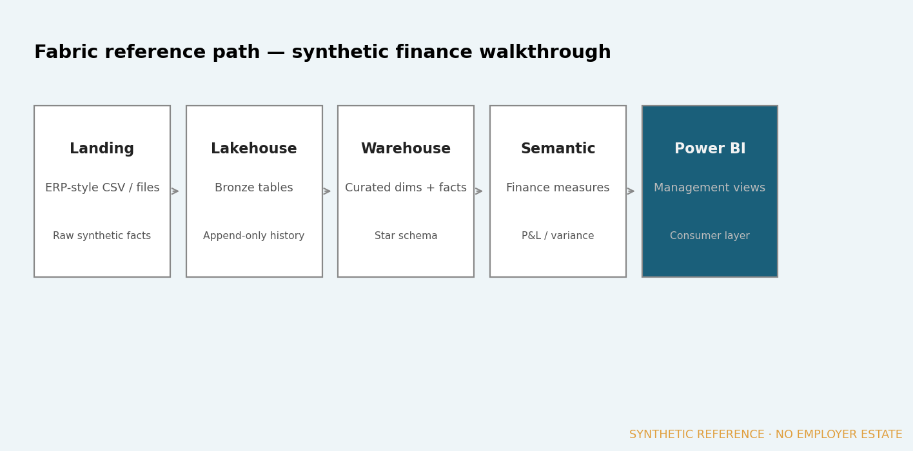
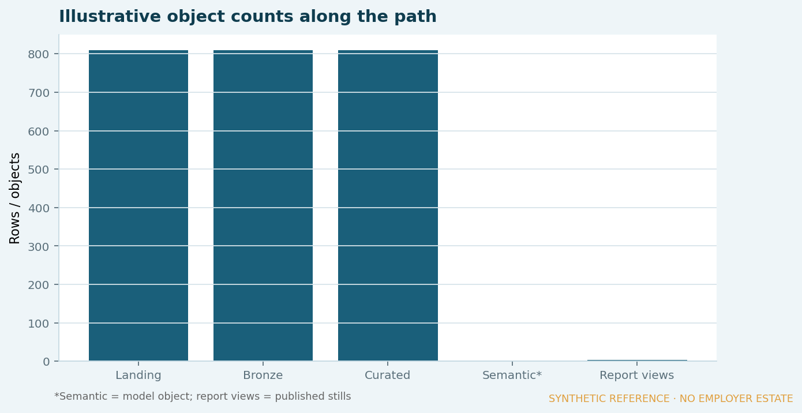

Synthetic reference · Evidence published
Fabric finance analytics path
A public-safe walkthrough of a governed path from ERP-style sources through Fabric concepts to a finance semantic model and management reporting — no employer estate.

Business context
Group reporting needs a path that scales beyond ad-hoc extracts: reusable definitions, lineage and a consumer layer finance can trust.
The problem
When every team pulls its own files, definitions drift and reconciliation becomes the product instead of the report.
My role
Document a reference architecture and publish a synthetic walkthrough that mirrors the finance flagship dataset end-to-end.
Approach
- Landing of ERP-style / file sources (synthetic finance CSVs).
- Fabric-path concepts: lakehouse / warehouse curation.
- Finance semantic model for P&L and variance measures.
- Power BI management views as the consumer layer.
Architecture / model
See the path diagram above. Below is the stage-by-stage lineage board for the same walkthrough.

Result
Published conceptual walkthrough artefacts. This is not a live Fabric workspace screenshot.

Reference + source:
- reference_lineage.csv
- finance fact_finance.csv (illustrative source)
- README.txt
Public-disclosure note
No employer Fabric capacity, workspaces, gateways or internal architecture are shown. Diagrams and stills are synthetic / conceptual.